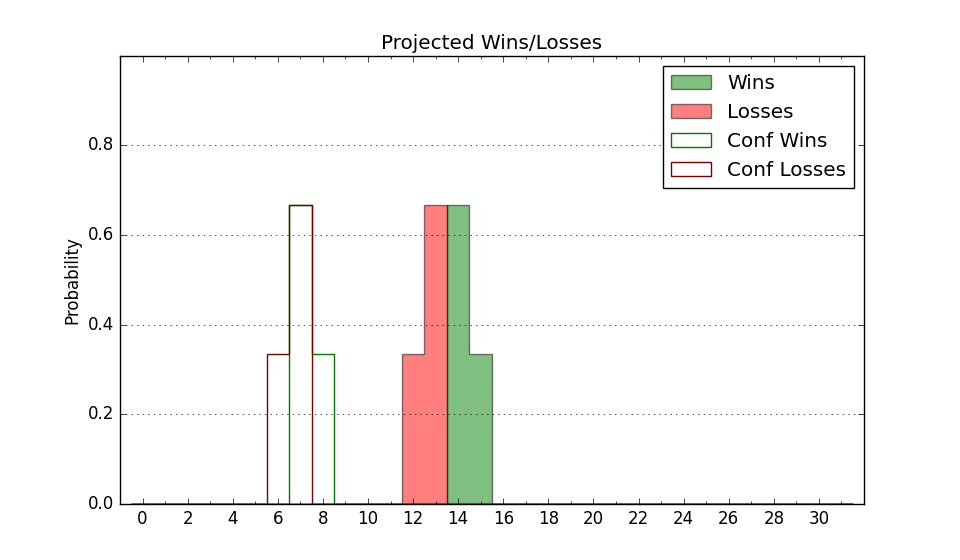

| Home | Game Probabilities | Conferences | Preseason Predictions | Odds Charts | NCAA Tournament |
| City: | Providence, Rhode Island | |
| Conference: | Ivy League (4th)
| |
| Record: | 7-6 (Conf) 14-12 (Overall) | |
| Ratings: | Comp.: -0.0 (176th) Net: -0.0 (175th) Off: 98.8 (265th) Def: 98.8 (98th) SoR: 0.0 (137th) |
| Remaining | ||||||
|---|---|---|---|---|---|---|
| Date | Opponent | Win Prob | Pred. | |||
| 3/4 | Yale (63) | 33.0% | L 64-69 | |||
| Previous | Game Score | |||||
| Date | Opponent | Win Prob | Result | Off | Def | Net |
| 11/7 | @Vermont (129) | 26.5% | L 65-80 | -5.2 | -9.0 | -14.2 |
| 11/10 | Colgate (115) | 50.9% | L 68-77 | -10.0 | -6.8 | -16.9 |
| 11/13 | @Loyola MD (321) | 69.2% | L 70-75 | -10.6 | -5.9 | -16.5 |
| 11/17 | Stony Brook (334) | 90.2% | W 64-53 | -16.2 | 11.6 | -4.5 |
| 11/23 | UMass Lowell (133) | 56.8% | L 62-73 | -14.1 | -6.9 | -21.0 |
| 11/27 | Maine (288) | 83.7% | W 70-63 | 0.4 | 0.7 | 1.1 |
| 11/29 | @Central Connecticut (346) | 77.7% | W 59-51 | -13.1 | 14.6 | 1.6 |
| 12/2 | @Bryant (192) | 39.1% | W 72-60 | 19.4 | 4.6 | 24.1 |
| 12/4 | @Hartford (362) | 92.9% | W 65-51 | -12.9 | 7.7 | -5.2 |
| 12/7 | @Rhode Island (257) | 54.3% | W 59-58 | -1.0 | 2.2 | 1.2 |
| 12/10 | @Michigan St. (32) | 8.2% | L 50-68 | -2.9 | 1.6 | -1.3 |
| 12/21 | New Hampshire (289) | 83.9% | W 67-51 | -6.1 | 9.3 | 3.3 |
| 12/29 | @Northwestern (34) | 8.2% | L 58-63 | 4.0 | 17.7 | 21.7 |
| 1/2 | Penn (134) | 57.0% | L 68-76 | -13.0 | -3.8 | -16.7 |
| 1/6 | Harvard (137) | 57.8% | L 68-70 | -5.2 | -3.4 | -8.6 |
| 1/7 | Dartmouth (283) | 82.9% | W 77-70 | 10.7 | -9.8 | 0.9 |
| 1/14 | Princeton (124) | 53.6% | W 72-70 | 9.8 | -3.5 | 6.3 |
| 1/16 | @Yale (63) | 12.6% | L 78-81 | 16.2 | 1.5 | 17.7 |
| 1/21 | Columbia (341) | 91.6% | W 97-85 | 11.6 | -22.9 | -11.3 |
| 1/28 | @Cornell (130) | 26.6% | L 73-80 | -0.3 | 2.1 | 1.8 |
| 2/3 | @Dartmouth (283) | 58.8% | W 73-61 | 12.8 | 4.8 | 17.6 |
| 2/4 | @Harvard (137) | 28.7% | W 68-65 | 10.3 | 4.8 | 15.1 |
| 2/11 | Cornell (130) | 55.3% | W 80-66 | 4.6 | 17.1 | 21.7 |
| 2/17 | @Princeton (124) | 25.3% | L 67-78 | -3.1 | 8.1 | 5.0 |
| 2/18 | @Penn (134) | 28.0% | L 69-90 | -3.4 | -18.3 | -21.7 |
| 2/25 | @Columbia (341) | 76.2% | W 84-73 | 14.9 | -13.4 | 1.5 |
| Stats & Trends | |||||
|---|---|---|---|---|---|
| Current | Day | Week | Month | Season | |
| Composite | -0.0 | -0.0 | +0.1 | +2.6 | +4.6 |
| Comp Rank | 176 | +1 | -- | +27 | +36 |
| Net Efficiency | -0.0 | -0.0 | +0.0 | +2.4 | -- |
| Net Rank | 175 | +2 | -- | +28 | -- |
| Off Efficiency | 98.8 | -0.0 | +0.5 | +2.0 | -- |
| Off Rank | 265 | -1 | -3 | +10 | -- |
| Def Efficiency | 98.8 | +0.0 | -0.5 | +0.5 | -- |
| Def Rank | 98 | -- | -2 | +30 | -- |
| SoS Rank | 206 | -2 | -11 | +99 | -- |
| Exp. Wins | 14.3 | +0.0 | +0.2 | +1.5 | +1.6 |
| Exp. Conf Wins | 7.3 | +0.0 | +0.2 | +1.5 | +0.7 |
| Conf Champ Prob | 0.0 | -- | -- | -0.8 | -10.0 |

| Advanced Stats | ||
|---|---|---|
| Stat | Value | Rank |
| Off Eff FG % | 0.502 | 186 |
| Off Ast Ratio | 0.149 | 121 |
| Off ORB% | 0.252 | 229 |
| Off TO Rate | 0.175 | 305 |
| Off FT Ratio | 0.307 | 206 |
| Def Eff FG % | 0.512 | 198 |
| Def Ast Ratio | 0.134 | 115 |
| Def ORB% | 0.224 | 35 |
| Def TO Rate | 0.164 | 125 |
| Def FT Ratio | 0.274 | 82 |